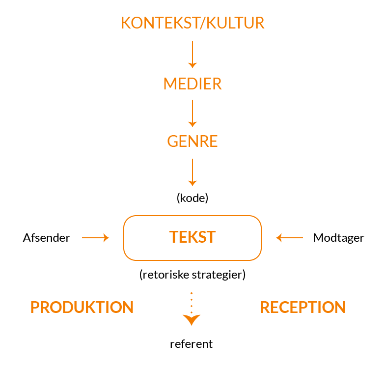
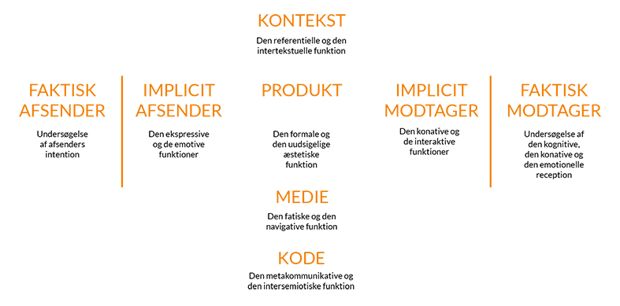
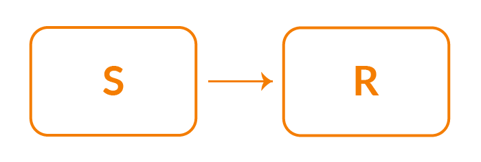
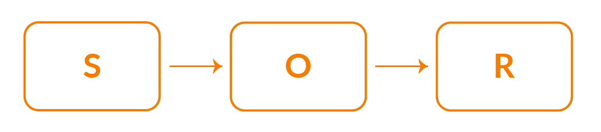
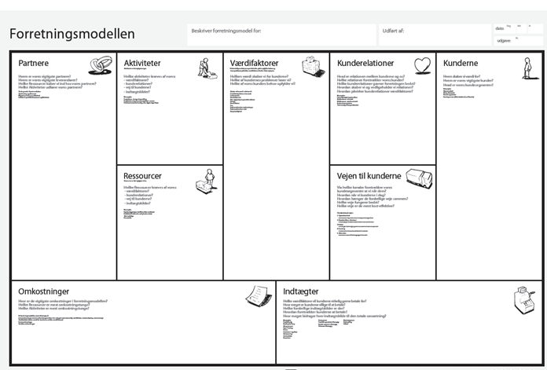
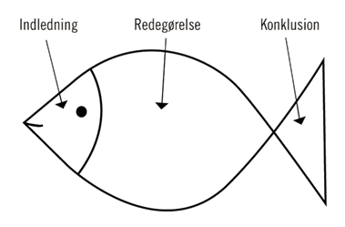

Grundlæggende kommunikation
En væsentlig faktor i grundlæggende kommunikation, og som multimediedesigner, er at kunne producere den korrekte kommunikationsløsning, og derefter skal man kunne forklare hvorfor man har valgt netop den løsning. For at kunne gøre dette skal man kende de forskellige kommunikationsmodeller og kommunikationsteorier. De forskellige modeller og teorier er delt op i to forskellige paradigmer; det samfundsvidenskabelige paradigme og det humanisme paradigme.
kommunikation og multimediedesign side 67
Det humanisme paradigme
De karakteristiske træk i dette paradigme:
- Subjektivitet
- Fortolkning
- Kvalitativ tilgang
- Situationsbestemt
- Modtagerorienteret
- Interaktion mellem mennesker
- Mennesket ses som aktivt
Dette betyder at for at opbygge viden inden for det humanisme paradigme er det vigtigt, at man benytter undersøgelsesmetoder, som giver en god forståelse for hvilke følelser og oplevelser modtageren har.
Kommunikation og multimediedesign side 68 – 69
IMK-MODELLEN
Denne model sætter man teksten, som afsender og modtager laver sammen, i fokus. Der er stor fokus på kultur, medier og forskellige genre, da alle disse faktorer er med til at udforme teksten.

Kommunikation og multimediedesign side 69
Thorlacius kommunikationsmodel:
Blå blå

Det samfundsvidenskabelige paradigme:
Dette er det modsatte af det humanistiske paradigme. Her er der fokus på afsenderen, som ses som den styrende faktorer inden for alt kommunikation. Dette er også kaldet transmission, man tror at verden er forudsigelig. Man går ud fra de kvantitative tilgange, som er målbare data.
Karakteristiske træk ved det samfundsvidenskabelige paradigme:
- Objektivitet
- Forklaring
- Kvantitativ tilgang
- Deduktion
- Stabile omgivelser
- Afsenderorienteret
- Transmission
- Handingsanvisende
- Modtageren ses som passiv
(Kommunikation og multimediedesign side 76-77)
S-R / SOR:
Her er der tale om to forskellige modeller. De bygger begge to på kanyleteorien; en teori, som bygger på at ”sprøjte” ideer, tanker og holdninger ind i modtageren. Dette betyder at man i sidste ende har kontrol over modtageren.
S-R
Denne model handler i bund og grund om at dele sit budskab og få respons på det. Hvis budskabet (stimulus) er kraftigt, modtager man også kraftig respons (response).

S-O-R
Forskellen fra S-R til S-O-R er egentlig bare O’et i midten. Det betyder at budskabet ikke er direkte, men at det skal igennem en organisme først. Det er dog stadig det samme budskab.

-Kommunikation og multimediedesign d. 78-79
Lasswells formel:
Lasswells formel består af fem spørgsmål:
- Hvem
- Siger hvad
- Gennem hvilken kanal
- Til hvem
- Med hvilken effekt
Dette er en kommunikationshandling, som viser at det har betydning for hvilket medie, man benytter til at udgive ens budskab.
(Kommunikation og multimediedesign s. 79)
Tekstproduktion
Når man skal producere en tekst, er det vigtigt at kende til hvilken målgruppe man producerer til. Her er der fokus på tre type tekster, til tre type medier; artiklen, tekster til web og sociale medietekster. Når man kender til målgruppen, er det også lettere at ligge en strategi for udarbejdelse af teksten.
-Kommunikation og multimediedesign s. 235-236
I dag findes næsten alle type tekster på de sociale medier. Man kan både finde nyheder, grafik, videoer, viden osv. Derfor må tekstproduktion ikke undervurderes, da det når ud til en helt masse mennesker. Det er vigtigt, at man tager højde for hvad man producere teksten til. Hvis det fx er til et billede-portfolio, skal der ikke stå en helt masse tekst og mindre billeder. Her klikker brugeren ind på siden, for at se billeder og derfor holdes teksten kort, men præcis. Man har ikke mange linjer at gøre med og derfor skal indholdet af teksten være relevant. Content is king – hvilket betyder at siden kan blive løftet en del af indholdet, men der kan også ske det modsatte.
-Kommunikation og multimediedesign s. 236
Nyhedskriterier
For at gøre en tekst relevant, kan man bruge de 5 nyhedskriterier;
Væsentlighed – Har dette betydning eller konsekvens for mange mennesker?
Identifikation – Kan læseren identificere sig med indholdet?
Aktualitet – Er det aktuelt lige nu og her, eller følges der op på noget, am allerede cirkulere?
Sensation – Det der fascinere eller chokere ud over det normale
Når man skal benytte disse 5 kriterier er det derfor vigtigt at kende sin målgruppe godt. Hvis man bruger de 5 kriterier er man sikret tre ting; kvalitet, delinger og trafik.
-Kommunikation og multimediedesign s. 236 – 237
Artiklen Her er der tale om den klassiske artikel, som de fleste mennesker kender. Artikler findes i mange slags forskellige medier fx aviser og hjemmesider. Når man skal opbygge en artikel, kan man tage udgangspunkt i denne model:

-Kommunikation og multimediedesign s. 240
Tekster til web
Når der er tale om tekster til web, er det vigtigt, at informationen er let at finde, da læserne tit scanner og skimmer sig igennem teksten. Her er der dog ikke tale om blogs. Et trick til at gøre det lettere for læseren er at benytte sig af interne links på siden, de kan placeres i teksten, så det er tekstlinks. Udover at teksten skal være let at navigere rundt i, skal layoutet også holdes enkelt, så læseren ikke bliver forvirret eller irriteret. Her er der nogle ting, man skal være bevidst om, når man producere en tekst til web:
-Tekstlinks
-Modtageren
-Afsenderen
-Formål og mål
-Eksterne links
-Krav
-Kommunikation og multimediedesign s. 247 og 249
Sociale medietekster
Når man producerer en tekst til sociale medier, er man i dialog med sine brugere. Det er vigtigt at holde teksten professionel. Når teksten er produceret og udgivet, er arbejdet langt fra færdigt. Brugerne kan kommentere på teksten og derfor er det vigtigt at være opmærksom på de kommentarer som kommer. Der findes Försters temperamentale rose, som kan hjælpe med dette. Der har de forskellige strategier farver:
-Blå er symbolsk for information og facs. Fokuser på tal, datoer, præcision og information
-Grøn er symbolsk for garantier og kvalitet. Fokuser på garantier, tradition, orden og kvalitet
-Gul er symbolsk for oplevelser. Fokuser på ideer, visioner, sjov, spontanitet og oplevelser
-Rød er symbolsk for kontakt og følelser. Fokuser på sympati, følelser, empati, varme og åbenhed.
-Kommunikation og multimediedesign s. 249 - 250
BMC:
BMC modellen er til at udarbejde en forretningsplan eller projekt. Der bliver gået i dybden med forskellige faktorer i virksomheden, som har betydning for at virksomheden er velfungerende. Det er bl.a. fx hvad virksomheden tilbyder af værdi. Denne model ville være god at bruge, hvis man er ved at starte sin egen virksomhed, da alle punkter skal kunne udfyldes for at virksomheden er fungerende.

Præsentationsteknik
Ved en præsentation af et emne er det vigtigt at være klar, tydelig og velformuleret. Det er også vigtigt at tage højde for hvilken målgruppe man præsenterer for (modtagergruppen). Hvis man ikke kender modtagergruppen for sin præsentation, kan det være svært at tilrettelægge sin præsentation efter gruppens interesse.
For at lave den korrekte præsentation, er der flere modeller, som hjælper med at strukturere præsentationen.
- Sig, hvad du vil sige
- Sig det
- Sig, hvad du lige har sagt
Den første faktorer er metakommunikation. Denne faktorer beskriver hvad oplægget omhandler og hvilke emner, som er relevante at komme ind på. Dette kan eksempelvis være til et oplæg om kostvejledning ”Min præsentation vil omhandle kostvejledning, hvorfor det er vigtigt at spise sundt og hvordan man gør det”. Til slut i den første faktorer, gentager man igen hvad man har sagt.
(Kommunikation og multimediedesign s. 315)
Fisken
Fisken er en kommunikationsmodel, som er opdelt i tre forskellige faktorer; begyndelse, midte og slutning.
Begyndelse:
Her er der tale om fiskens hoved, altså indledningen. Her er det meningen at man gerne vil gøre målgruppen interesseret i, hvad man har at sige. Det er rigtig vigtigt, at være velformuleret og præcis og fortælle hvad man vil komme ind på og hvorfor man vil komme ind på dette.
Midten:
Her er der tale om fiskens krop. Her ligger størstedelen af dit oplæg, da det er selve indholdet af hvad du vil sige, som ligger her. Man fortæller ens konklusion af hvad man gerne vil sige og fortæller ens pointer med oplægget.
Slutning:
Her er der tale om fiskens hale. Dette er afslutningen på oplægget. Her gennemgår man lige ens pointer med oplægget, en gang til. Her er det også en god ide at begyndelsen og slutningen på oplægget hænger sammen, for at lave en rød tråd igennem oplægget.
(Kommunikation og multimediedesign s. 67 – 68 og s. 76)

Fisken kilde
Øvelse og timing
For at ens præsentation slår igennem og bliver en spændende præsentation, som fanger målgruppen, er det vigtigt at øvelse og timing sidder lige i skabet. Det er derfor vigtigt at øve sit oplæg, så man ved præcist hvad man vil sige og at man lyder selvsikker, når man præsenterer.
Derudover er timingen også rigtig vigtig. Her menes det, at man benytter tiden rigtigt, når man præsenterer. Man skal bruge mest tid, på det interessante for ens målgruppe.
(Kommunikation og multimediedesign s. 321)
Kvalitativ og kvantitativ empiri
Kvantitative undersøgelser
Den kvantitative metode benyttes til en bred undersøgelse af et emne. Dette kan fx være ved brug af et spørgeskema, statistikker eller meningsmålinger. Fælles for disse metoder til indsamling af information er at informationen oftest måles i tal.
Systime, linje 1 og 2
Derudover er det vigtigt at der er samlet nok information om emnet der undersøges inden spørgsmålene bliver formidlet. Der er derfor ofte stort data-materiale.
I den kvantitative metode er man ikke interesseret i at kende respondenternes holdninger og overvejelser om hvorfor de svarer som de gør.
Formidlingogmetode, slide 11 og 12
Svagheder ved kvantitative undersøgelser
- Kan være generaliserende.
- Indsamler ikke dybdegående svar.
- Generelle svar er ikke nødvendigvis rigtige.
- Svært at vurdere om respondenterne svarer ærligt.
Styrker ved kvantitative undersøgelser
- Man kan hurtigt finde ”årsagen” til et problem ved brug af den kvantitative metode.
- Store datamængder kan behandles.
- Let at få overblik over mange svar.
- Billig og ikke særlig tidskrævende.
- Kan være generaliserende.
Hvad kendertegner kvalitative undersøgelser?
Den kvalitative metode benyttes til en mere dybdegående undersøgelse af et emne. Dette kan fx være ved brug af et interview. Målet med denne form for metode er, at gå i dybden med holdninger, meninger, forslag og ændringer til et emne, som det enkelte individ har. Der er oftest mere begrænset data-materiale, men derimod mere i dybdegående resultater.
Svagheder ved kvalitative undersøgelser
- Tidskrævende og dyr
- Ikke repræsentativ
- Ikke generalisér-bar
Styrker ved kvalitative undersøgelser
- Begrænset mulighed for at generalisere
- Indsamlet dybdegående svar
- Mulighed for ny viden og større indsigt
- Dybere forståelse for respondenterne
Hvordan kan man kombinere kvalitative og kvantitative undersøgelser?
Et eksempel på at benytte både den kvalitative-og kvantitative metode kan være en brugerundersøgelse af et website. Hvis virksomheden, som står bag websitet, gerne vil vide hvordan de kan forbedre brugeroplevelsen, kan de starte med at benytte den kvantitative metode. Her kunne de fx forberede massere af spørgsmål til et spørgeskema, som bliver sendt ud til deres kunder. Meningen med spørgsmålene kunne være at finde ud af, hvilke ting på websitet, som kan forbedres. Virksomheden kan med fordel bruge en ansat, som til hverdag arbejder med deres hjemmeside, for at få mere præcise spørgsmål, som gør det lettere at indkredse emnerne. Et eksempel på et spørgsmål til spørgeskemaet kunne fx være:
”Synes du betalingens siden på websitet fungerer optimalt?”.
Her kunne svarmulighederne fx være:
”Ja”
”Nej”
eller
”I høj grad”
”I nogen grad”
” I mindre grad”
1. Svarene er derfor ikke dybdegående i den kvantitative metode. Når virksomheden modtager svarene fra spørgeskemaet, kan de undersøge hvilke faktorer, kunderne synes er gode og hvilke der trænger til forbedring. Ved den kvantitative undersøgelse finder virksomheden ud af hvilken side eller hvilke faktorer på hjemmesiden, som trænger til forbedring, men de ved ikke hvad kunderne vil have lavet om. Her kommer den kvalitative metode i spil. I dette eksempel bruges den kvalitative metode til at finde ud af hvordan faktorerne på websitet bliver forbedret bedst muligt ift. kundernes mening. Her kunne virksomheden fx formidle et interview, som sætter fokus på de problemstillinger, som de fandt frem til, ved hjælp af spørgeskemaet fra den kvantitative metode. Den kvalitative metode benyttes i dette eksempel, til at komme helt tæt på nogle af kundernes holdninger og meninger, til hvordan websitet skal forbedres. Spørgeskemaet har gjort det muligt for virksomheden at finde frem til problemstillingerne og derfor bliver spørgsmålene i interviewet indkredset, så der er mange spørgsmål til de enkelte problemstillinger ved websitet. Dette giver den enkelte kunde mulighed for at fortælle virksomheden hvordan det enkelte problem bliver gjort bedre og hvad der skal ændres. Et eksempel på et spørgsmål kunne være:
”Hvad skal der ændres ved betalingsmetoden på websitet?”
Her kan kunden fortælle hvad der fx gør det kompliceret at betale på websitet. Det kunne være problemet var layoutet eller for få betalingsmuligheder.
Ved brug af både den kvantitative- og kvalitative metode gjorde det, det lettere for virksomheden, først at indkredse problemstillingerne og derefter analysere hvad der præcis skulle ændres, for at gøre brugeroplevelsen bedre for kunderne.
Hvad betyder at transskribere?
Det betyder at man overfører noget tale til skrift. Det kan eksempelvis være et optaget interview, som man derefter skriver ordret ned.
Linje 1
Hvad betyder meningskondensering?
Dette betyder at man eksempelvis efter et interview sammenfatter de vigtigste pointer og budskaber i interviewet. Der kan sagtens være en risiko ved dette, da man fx kan komme til at lade fortolkningen af interviewet blive styret for meget af problemstillingen, som man selv har udarbejdet.
Slide 74 og 75
Opgaver fra undervisning
Ophavsret og lisenser
Tekstproduktion
Terminsprøve
Interview
Fitnessworld ganstertest
Gangstertest
Usability
Kvantitativ og kvalitativ empiri